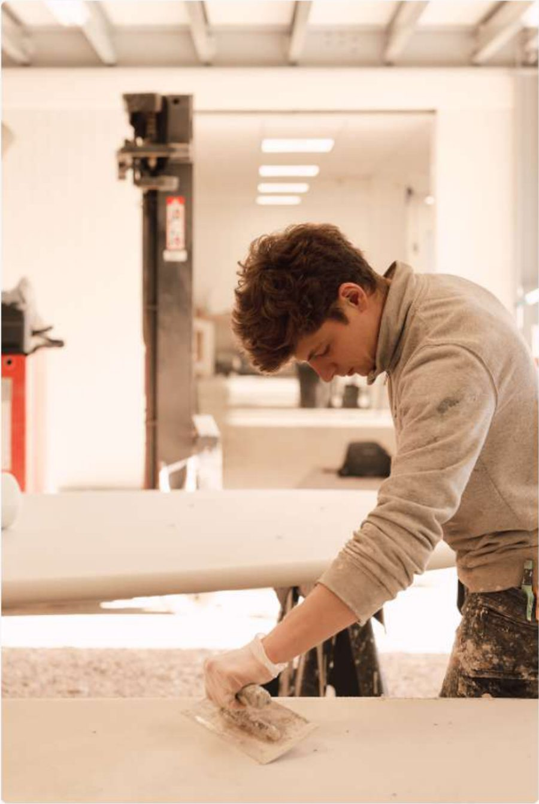
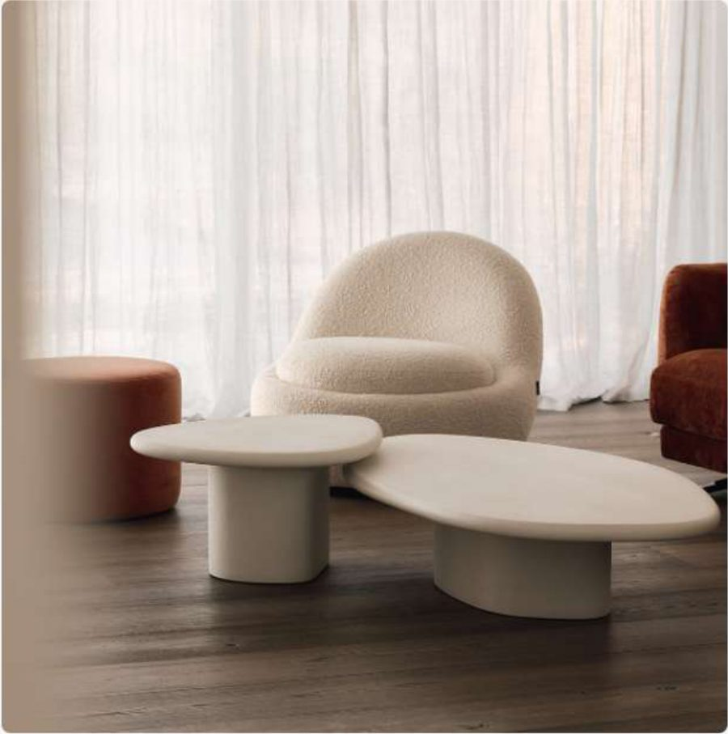
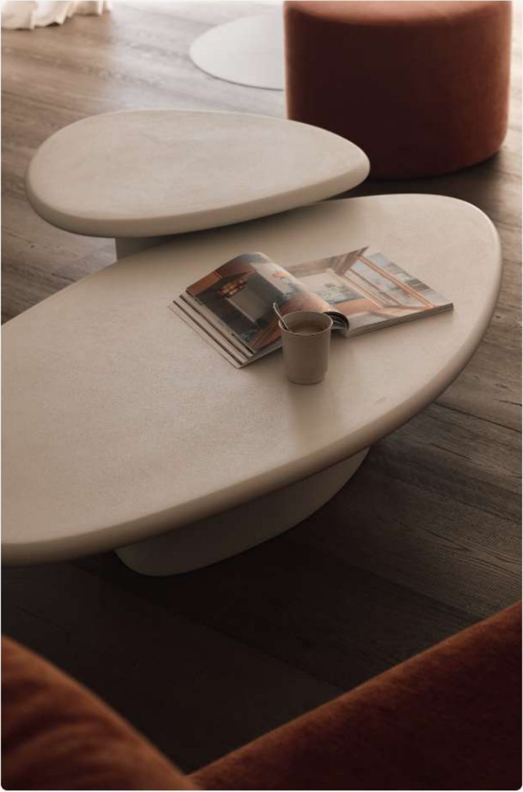
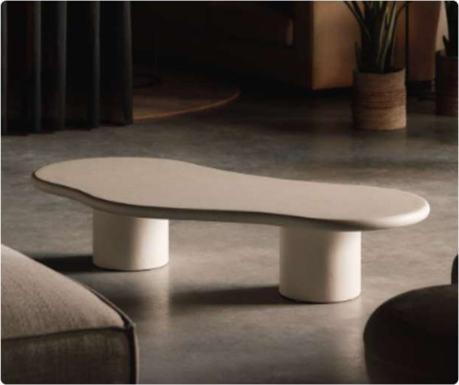
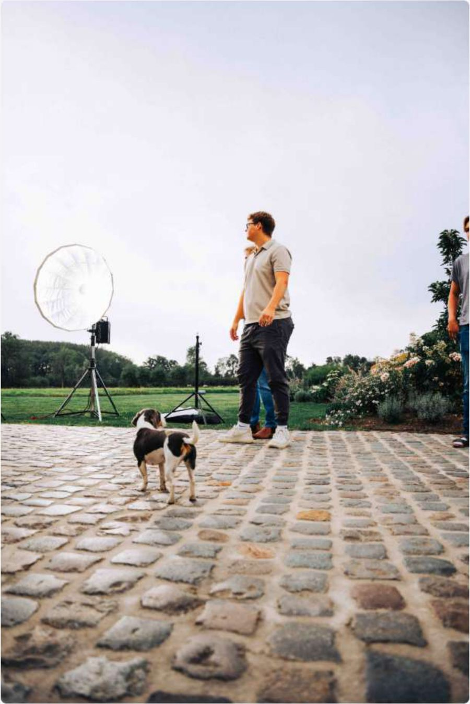
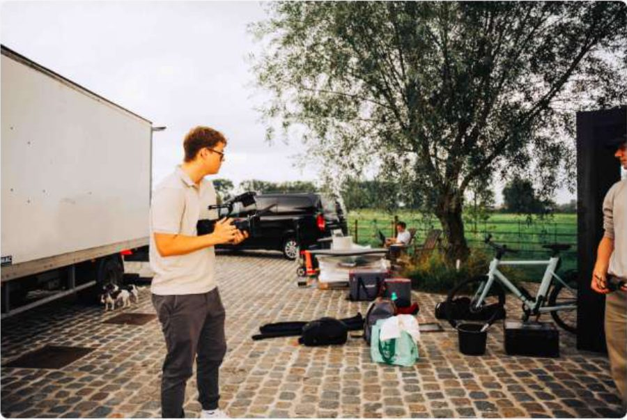
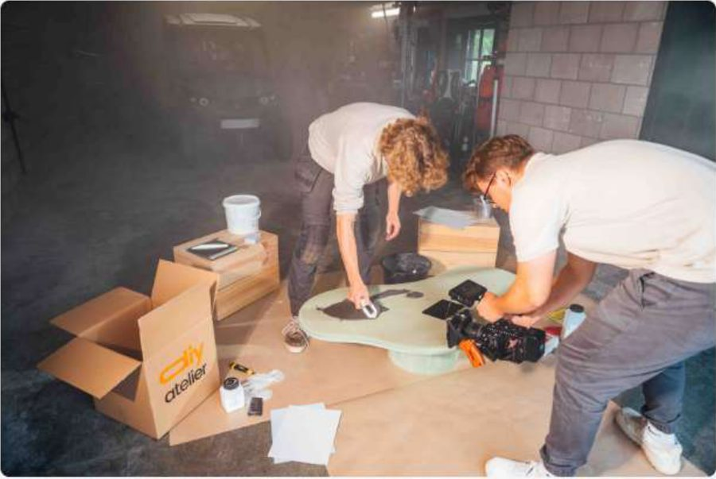
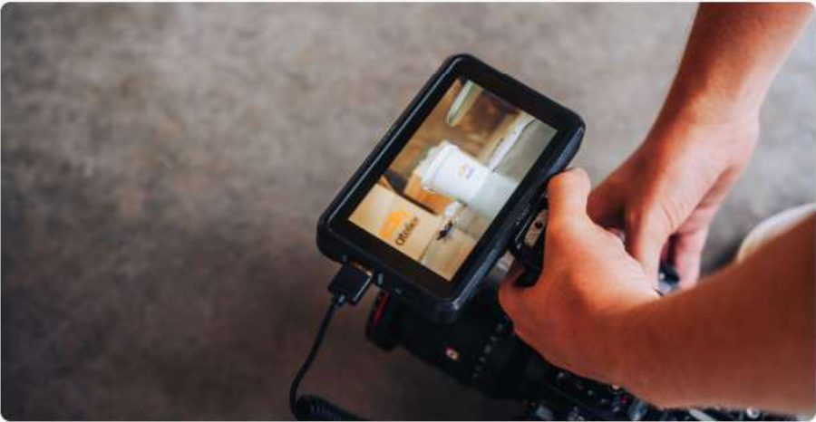
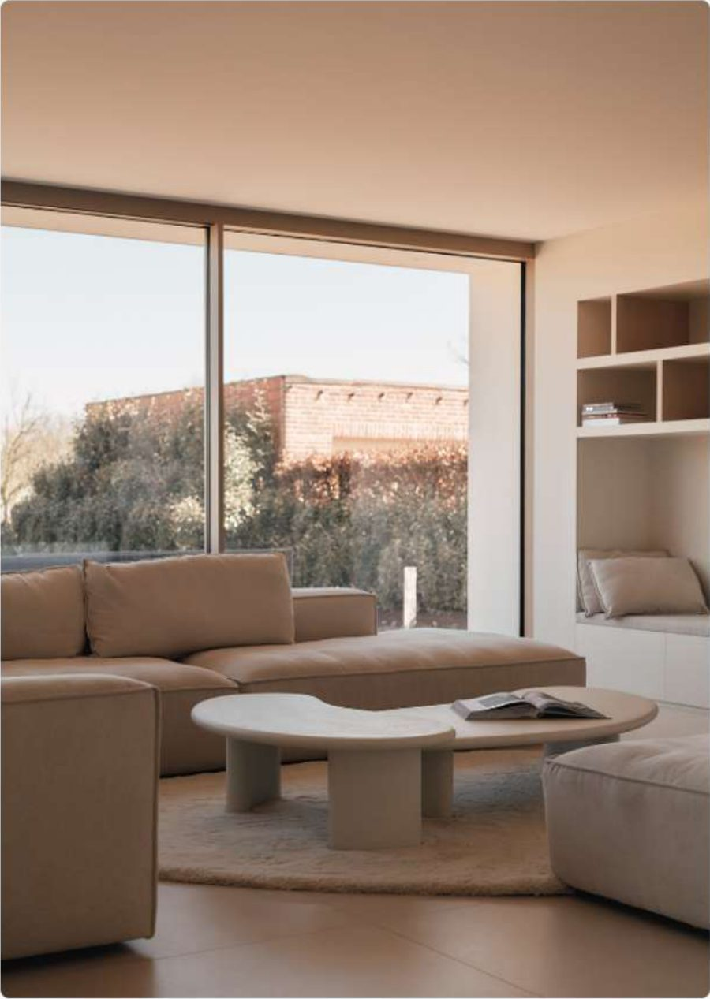

Jouw creativiteit, onze materialen DIY met topkwaliteit
Zelf unieke meubels en decorstukken maken? Bij DIY-Atelier helpen we je met hoogwaardige materialen en duidelijke tutorials. Van Mortex tafels tot andere stijlvolle creaties – ontdek hoe eenvoudig het is om zelf aan de slag te gaan!
Ontdek de eenvoud van DIYHoe werkt het?
Blader door onze webwinkel en kies het DIY-pakket dat bij jouw stijl en wensen past. Van tafels tot decoratie, wij hebben alles om jouw creativiteit te laten bloeien!
Je ontvangt een compleet pakket met alle materialen die je nodig hebt. Volg onze eenvoudige tutorials en ontdek hoe leuk en makkelijk het is om zelf iets moois te maken.
Na het bouwen heb je een prachtig handgemaakt meubel of decorstuk voor een fractie van de winkelprijs. Jouw creatie, jouw trots!
DIY Mortex Tafel – Maak het zelf!
Benieuwd hoe je zelf een prachtige Mortex tafel maakt? In deze video laten we je stap voor stap zien hoe eenvoudig het is om met onze materialen en tutorials een hoogwaardig designstuk te creëren.
Uitgelichte producten

Wat zeggen mensen over ons?
Tom - Praktische klusser
"Ik dacht altijd dat zelf een design tafel maken veel te ingewikkeld was, maar DIY-Atelier maakt het zo makkelijk! De instructies waren duidelijk en het resultaat is fantastisch."
Sophie - Creatieve DIY
"Alles werd netjes geleverd en de video’s hielpen enorm. Het voelde alsof ik een professioneel meubelstuk maakte, maar dan gewoon in mijn eigen garage!"
Lisa & Mark
"We wilden iets unieks voor onze eetkamer zonder de hoofdprijs te betalen. Dankzij DIY-Atelier hebben we nu een prachtige Mortex tafel waar we super trots op zijn!"
Zelf ook een uniek meubelstuk maken? Ontdek onze DIY-pakketten en tutorials en ga vandaag nog aan de slag!
Bekijk onze DIY-pakkettenRealisaties









FAQ (Veelgestelde vragen)
DIY-Atelier is hét platform voor doe-het-zelf projecten met hoogwaardige materialen en duidelijke tutorials. We helpen je om zelf design meubels en decorstukken te maken tegen een betaalbare prijs. Elk project wordt volledig ondersteund met de nodige uitleg in videoform. Hierdoor kan elk project zoals een professional tot een goed einde gebracht worden.
Heel eenvoudig! Je kiest een DIY-pakket in onze webshop, ontvangt alle benodigde materialen thuis en volgt onze stapsgewijze tutorials om jouw eigen unieke meubel of decorstuk te maken.
Voor de DOE-HET-ZELVERS die niet kunnen wachten, kan de bestelling na 1 werkdag ook steeds opgehaald worden aan het centraal depot van DIY-atelier Belgium.
Elk pakket bevat alle materialen die je nodig hebt, plus een stap-voor-stap handleiding en toegang tot een exclusieve tutorialvideo.
Wij kunnen enkel onbewerkte goederen rembourceren. Van zodra er bewerkingen uitgevoerd zijn op de aankoop/materialen, kunnen wij geen goederen onder garantie brengen.
In de webshop wordt er steeds een indicatie gegeven waarop de moeilijkheidsgraad wordt weergegeven.
Elk pakket (geen individuele stukken) wordt voorzien van ALLE nodige onderdelen die essentieel zijn om jouw project tot een goed einde te brengen. Hierbij wordt er niets van extra gereedschap vereist. Bij aankoop van individuele stukken worden geen extra tools meegeleverd.
Geen zorgen! Onze tutorials helpen je stap voor stap. Kom je er toch niet uit? Stuur ons een berichtje en we helpen je verder.
Je kunt veilig betalen met iDEAL, creditcard, PayPal en Bancontact.
Wij kunnen enkel instaan voor ontvangen goederen die beschadigd zijn. Van zodra er bewerkingen uitgevoerd zijn op de aankoop/materialen, kunnen wij geen goederen onder garantie brengen.